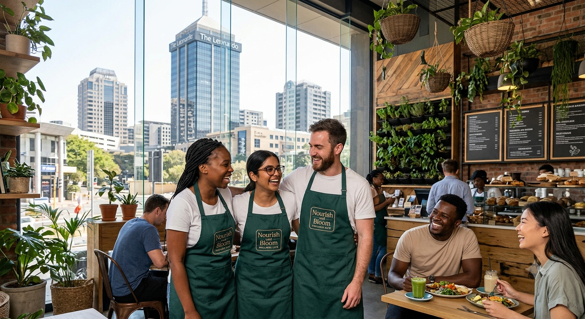

Mission
To serve fresh, energising food and drink grown as close to the table as a city allows, in a space that feels warm, unhurried and genuinely welcoming to everyone who works in or visits Sandton.
Nourish and Bloom is an independent wellness café in Sandton Central, built by three friends who wanted city food to taste like it was grown nearby.
Nourish and Bloom opened in October 2021 as a four-table coffee counter on the second floor of a Maude Street office block. The rooftop was unused, so we filled it with planter boxes and started growing the herbs we could not buy fresh enough.
By 2023 the terrace had become the café. We now seat sixty guests, grow more than forty varieties upstairs, and opened a second, smaller counter in Sandown in 2025.

To serve fresh, energising food and drink grown as close to the table as a city allows, in a space that feels warm, unhurried and genuinely welcoming to everyone who works in or visits Sandton.
To become Sandton's most-loved everyday garden and three rooftop cafés by 2030, each growing its own produce and employing and training people from the surrounding community.
All herbs, leaves and edible flowers are harvested from our own rooftop.
Pulp from the juice press becomes our seed crackers; garden trimmings go back into the compost beds.
Coffee from a Johannesburg roastery, dairy from a Gauteng family farm, bread baked daily two blocks away.
A former events manager who planted the first herb box and still runs the harvest roster every morning.
Trained in Cape Town, obsessed with fermentation, and responsible for the seasonal garden bowls.
Two-time regional latte art finalist who runs our training programme for new baristas.